🧭 瘟疫危机：传承·第二季
Pandemic Legacy: Season 2 · 设计：Rob Daviau & Matt Leacock · Z-Man Games (Asmodee) 出版 · 2–4 人 · 官方英文规则书全文翻译（20 页 · AI 辅助机翻）
本页收录《瘟疫危机：传承·第二季》（Pandemic Legacy: Season 2, 2017）的原版官方规则书全部 20 页（底本：Z-Man Games / Asmodee 官方（zmangames.com 游戏页 Rules 下载），pandemic_legacy_season_2_rules.pdf），逐页随图排列，点击任意图片即可放大查看；每页下方默认折叠了该页的 AI 辅助中文机翻对照，需要时可展开。规则内容归 Z-Man Games (Asmodee) 及版权方所有，收录仅供个人学习查阅。
整理说明：机翻对照按本站术语口径对齐（牌库/手牌/回合/轮/板块/指示物等），PDF 图文混排页的语序可能与原书视觉顺序略有出入；规则细节请一律以页面上方原书页面为准。
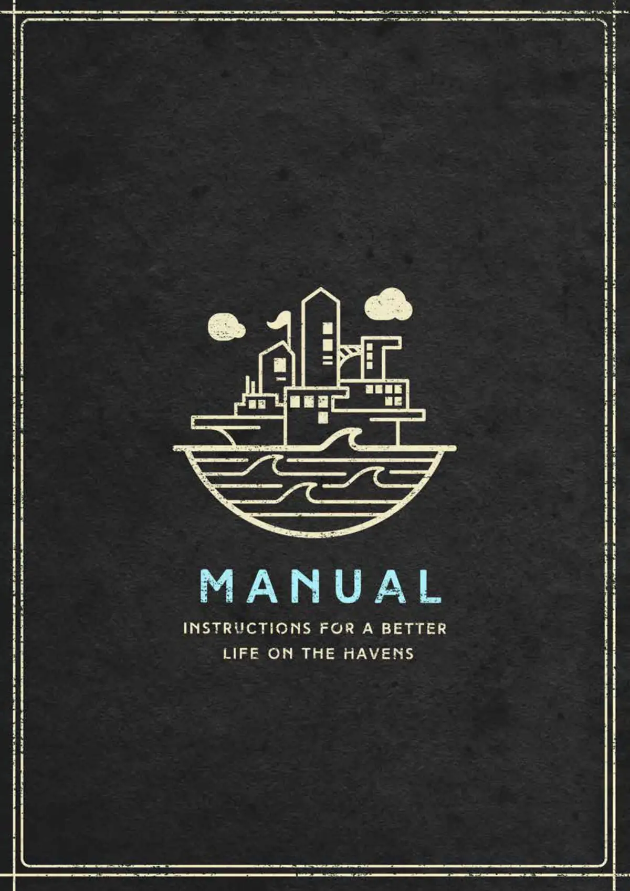
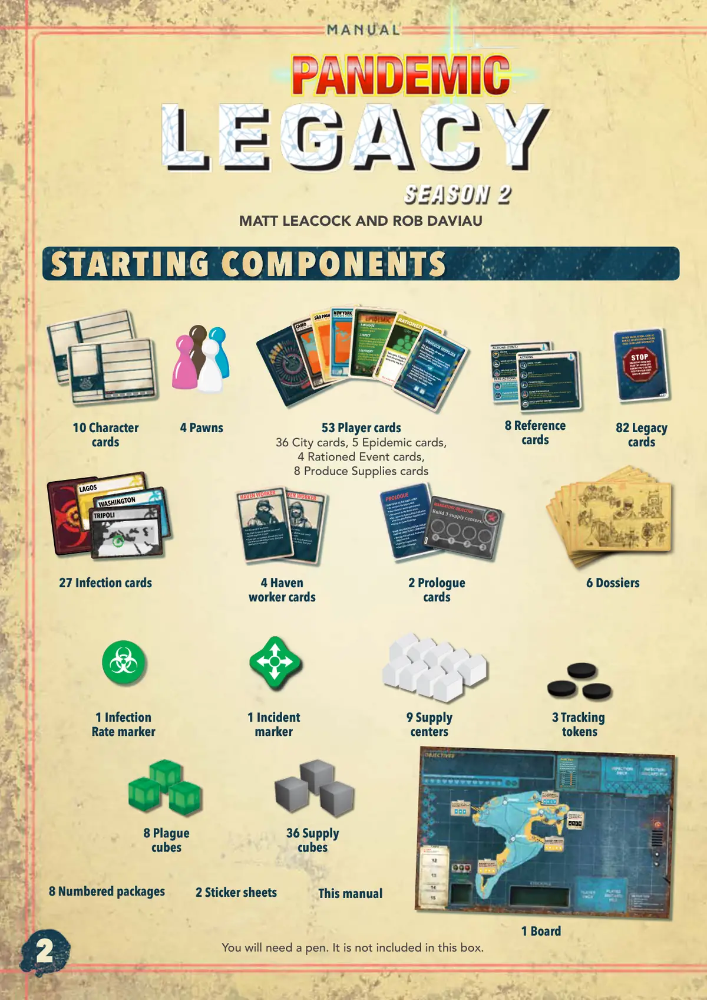
📝 第 2 页 AI 机翻对照（点击展开）
姓名
死亡地点
暴露
家乡
年龄
职业
照片
姓名
死亡地点
暴露
家乡
年龄
职业
照片
拉各斯
华盛顿
的黎波里
停止
抽取这张卡牌并
在你一月份的首次游戏
设置步骤2期间阅读另一面。
在指示前，不要抽取、揭示、查看、
处理或以其他方式干扰这些卡牌。
01-01a
行动（续）
免费行动
侦察
在符合条件的地点弃牌以探索世界。
该地点必须包含一个供应中心。
制造补给
从库存中取出1个补给方块并将其放置在你的角色卡上。
运送补给
将你角色卡上的任意数量的补给方块
放入你当前所在地点。
收集补给
从你所在地点取走任意数量的补给方块并将它们
放置在你的角色卡上。
转移补给
在你所在地点将补给方块给予另一名玩家或从该玩家处
获取补给方块（需获得许可）。
在你的回合的"执行行动"步骤期间执行任意数量的免费行动。
驾车/渡轮
移动到由线路连接的相邻地点。
航行
弃掉一张卡牌以移动到卡牌上命名的城市，
前提是你能追踪到一条通往该城市的海上航线。
租船
弃掉与你当前城市相匹配的卡牌以移动到任意地点，
前提是你能追踪到一条通往该地点的海上航线。
分享知识
选择：将一张与你所在城市相匹配的卡牌给予另一名玩家，
或从另一名玩家处获取该卡牌。
你们两人都必须在与卡牌相匹配的城市中。
建造供应中心
弃掉5张与你城市颜色相匹配的卡牌以在那里建造一个供应中心。
行动
开罗
30°2'40''N 31°14'9''E
开罗
30°2'40''N 31°14'9''E
圣保罗
23°33'2''S 46°37'60''W
圣保罗
23°33'2''S 46°37'60''W
纽约
40°45'32''N 73°59'4''W
纽约
40°45'32''N 73°59'4''W
1-增加
将感染率标记向前移动1格。
2-感染
从感染牌库底部抽一张牌并移除该城市中的所有补给方块（如果有）。
弃掉那张牌。
3-加剧
洗混感染弃牌堆中的卡牌并将它们放在
感染牌库的顶部。
可在任何时机使用。不是行动。
配给事件
从库存中取走最多2个补给方块并将它们
放置在任何地点上。
Bravo小队
生产补给
或者
作为一个行动，执行以下之一：
• 本地生产：在避难所或供应中心，将你当前地点填充到其人口数量的补给方块。
• 全系统生产：在避难所或供应中心，将所有避难所和
供应中心填充到它们的人口数量的补给方块。
• 然后，检查下方的一个方框。
当所有方框都被勾选时，销毁这张卡牌。
序章
使用除以下外的所有规则：
• 不要开启传承牌库。
• 你的角色不能被暴露。
• 你不能执行侦察行动。
• 当你打出生产补给卡牌时，不能执行全域生产。
• 不要执行游戏结束步骤。
当你玩了足够多次序章，感到舒适时：
• 销毁这张卡牌和序章目标卡牌。
• 开启传承牌库。
• 开始你的战役。
00-01b
建造3个补给中心。
必须完成的目标
00-02b
港口工人
在任何港口开始游戏。
• 你没有特殊能力，不能获得升级或伤疤。
• 如果你获得暴露，弃掉你的手牌并失去任何剩余的行动。在你的下一个回合开始在任意港口。
港口工人
在任何港口开始游戏。
• 你没有特殊能力，不能获得升级或伤疤。
• 如果你获得暴露，弃掉你的手牌并失去任何剩余的行动。在你的下一个回合开始在任意港口。
Jacksonville（杰克逊维尔）
Washington（华盛顿）
New York（纽约）
São Paulo（圣保罗）
Lagos（拉各斯）
Tripoli（的黎波里）
Cairo（开罗）
London（伦敦）
Istanbul（伊斯坦布尔）
A
A
A
*
- *
- *
B
B
B
C
C
C
D
D
D
E
游戏结束
1. 调整人口
2. 检查传承牌库
3. 解决游戏结束卡牌
4. 消耗生产单位
网格上的
城市
生产
单位
1–10
11–16
17–24
25–33
34–42
43+
+1 如果你赢得了游戏
用4张独特的黑色卡牌从此处的补给中心进行侦察，以开启包2。
用任意3张蓝色卡牌从此处的补给中心进行侦察，以开启包1。
用4张独特的蓝色卡牌从此处的补给中心进行侦察，以开启包4。
港口
航行和包船行动需要港口。
用任意4张黄色卡牌从此处的补给中心进行侦察，以开启包5。
用5张独特的黄色卡牌从此处的补给中心进行侦察，以开启包7。
图例
10 张角色卡
53 张玩家卡
36 张城市卡，5 张疫情卡，4 张配给事件卡，8 张生产补给卡
36 个补给
方块
82 张传承
卡
2 张序章
卡
1 张版图
8 个编号包
1 个感染
速率标记
3 个追踪
标记
1 个事件
标记
2 张贴纸
本手册
6 个档案
4 张港口
工人卡
9 个补给
中心
27 张感染卡
4 个棋子
你需要一支笔。它不包含在这个盒子里。
MATT LEACOCK（马特·利科克）和 ROB DAVIAU（罗布·达维奥）
8 张参考
卡
起始组件
起始组件
8 个瘟疫
方块
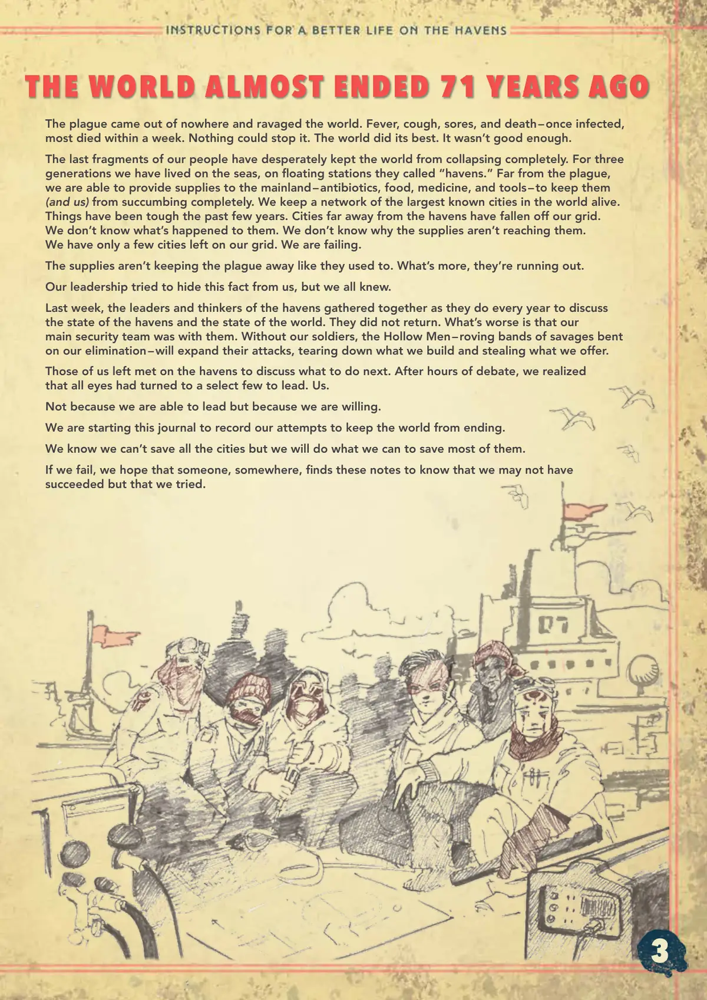
📝 第 3 页 AI 机翻对照（点击展开）
世界几乎在71年前终结
世界几乎在71年前终结
瘟疫不知从何处出现，席卷了整个世界。发烧、咳嗽、疮口和死亡——一旦感染，大多数人在一周内就会死亡。没有任何东西能够阻止它。世界尽了最大努力，但还不够。
我们最后的人民碎片绝望地阻止了世界完全崩溃。我们已经三代人在海上生活，在被称为"避难所"(havens)的浮动站上。远离瘟疫，我们能够向大陆提供补给——抗生素、食物、药品和工具——以防止他们（和我们）完全屈服。我们维持着世界上已知最大城市的网络运转。
过去几年情况一直很艰难。远离避难所的城市已经从我们的网络中消失了。我们不知道它们发生了什么。我们不知道为什么补给无法送达它们。
我们的网络只剩下少数几个城市。我们正在失败。
补给不像以前那样能够阻止瘟疫。更糟的是，它们正在耗尽。我们的领导试图向我们隐瞒这一事实，但我们都知道。
上周，避难所的领导者和思想家们像每年一样聚集在一起，讨论避难所和世界的状况。他们没有回来。更糟的是，我们的主要安全团队和他们在一起。没有我们的士兵，那些空心人(Hollow Men)——旨在消灭我们的野蛮游荡团伙——将扩大他们的攻击，摧毁我们建造的一切，抢夺我们提供的一切。
我们剩下的人在避难所开会讨论下一步该做什么。经过数小时的辩论，我们意识到所有人的目光都转向了少数几个领导者身上。我们。
不是因为我们有领导能力，而是因为我们愿意。
我们开始写这本日记，记录我们试图阻止世界终结的努力。
我们知道我们无法拯救所有城市，但我们会尽最大努力拯救大多数城市。
如果我们失败了，我们希望某时某地的某个人能找到这些笔记，了解我们可能没有成功，但我们努力过。
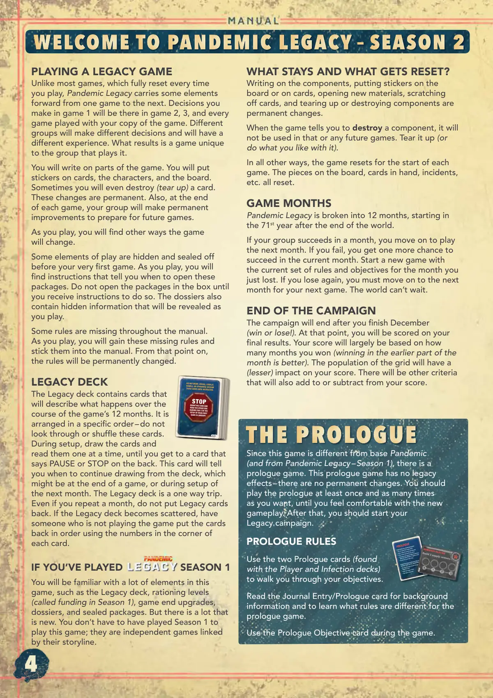
📝 第 4 页 AI 机翻对照（点击展开）
停止
抽取这张卡牌并
在你第一次游戏
一月份的设置步骤 2 期间
阅读另一面。
在指示前，不要抽取、揭示、查看、
处理或以其他方式干扰
这些卡牌。
01-01a
序章
使用除以下外的所有规则进行游戏：
• 不要开启传承牌库。
• 你的角色不会被暴露。
• 你不能执行侦察行动。
• 当你打出生产补给卡牌时，不能执行全系统生产。
• 不要执行游戏结束步骤。
当你玩了足够多次序章
感到舒适后：
• 销毁这张卡牌和序章目标卡牌。
• 开启传承牌库。
• 开始你的战役。
00-01b
建造3个补给中心。
必须完成的目标
00-02b
玩传承游戏
与大多数每次游戏都会完全重置的游戏不同，《瘟疫传说》会将一些元素从前一游戏延续到下一游戏。你在游戏1中做的决定会出现在游戏2、3以及使用你游戏副本进行的每场游戏中。不同的团体会做出不同的决定，并有不同的体验。结果是一个对游玩该团体的独特游戏。
你会在游戏的部分内容上书写。你会在卡牌、角色和版图上贴贴纸。有时你甚至会销毁（撕掉）一张卡牌。这些改变是永久性的。此外，在每场游戏结束时，你的团体将做出永久性改进以准备未来的游戏。
随着游戏进行，你会发现游戏的其他变化方式。
一些游戏元素在第一次游戏前是隐藏和密封的。随着游戏进行，你会发现指示何时打开这些包裹的说明。在收到指示前，不要打开盒子里的包裹。档案也包含随着游戏进行会揭示的隐藏信息。
手册中缺少一些规则。随着游戏进行，你会获得这些缺失的规则并将它们粘贴到手册中。从那时起，规则将被永久改变。
传承牌库
传承牌库包含描述游戏12个月过程中发生事件的卡牌。它按特定顺序排列——不要翻阅或洗这些牌。
在设置期间，抽取卡牌并逐一阅读，直到你抽到背面写着"暂停"或"停止"的卡牌。这张卡牌会告诉你何时继续从牌库中抽取，这可能是在游戏结束时，或在下个月设置期间。传承牌库是一次性旅程。即使你重复一个月，也不要将传承牌牌放回。如果传承牌库散乱，让不玩游戏的人根据每张卡牌角落的数字将卡牌按顺序放回。
如果你玩过
第一季
您可能会熟悉本游戏中的许多元素，例如传承牌库、配给等级（在第一季中称为资金）、游戏结束升级、档案袋和密封包。但也有很多新内容。您不必玩过第一季才能玩这款游戏；它们是通过故事情节联系起来的独立游戏。
什么保持不变，什么会被重置？
在组件上书写、在版图或卡牌上贴贴纸、打开新材料、刮开卡牌上的涂层，以及撕毁或销毁组件，这些都是永久性的改变。
当游戏指示您销毁一个组件时，它将不会在当前或任何未来的游戏中使用。请将其撕毁（或按您喜欢的方式处理）。
在所有其他方面，游戏会在每局开始时重置。版图上的棋子、手牌中的卡牌、事件卡等都会重置。
游戏月份
《瘟疫传说：传承》分为12个月份，始于世界结束后的第71年。
如果您的团队成功度过一个月，您将继续玩下一个月。如果失败，您将有一次额外机会在当前月份取得成功。使用当前月份的规则和目标开始新游戏。如果再次失败，您必须在下一局游戏中进入下一个月。世界等不及了。
战役结束
在您完成12月（无论输赢！）后，战役将结束。届时，您将根据最终结果进行评分。您的分数主要基于您赢得的月份数量（在月份早期获胜更好）。网格内的人口将对您的分数产生（较小）影响。还有其他标准也会增加或减少您的分数。
由于这款游戏与基础版《瘟疫传说》（以及《瘟疫传说：传承》第一季）不同，因此有一个序幕游戏。这个序幕游戏没有传承效果——没有永久性的改变。您应该至少玩一次序幕游戏，并根据需要多次游玩，直到您对新游戏玩法感到舒适。之后，您应该开始您的传承战役。
序幕规则
使用两张序幕卡（随玩家牌库和感染牌库一起提供）来引导您了解目标。
阅读条目记录/序幕卡以获取背景信息，并了解序幕游戏的规则有何不同。
在游戏过程中使用序幕目标卡。
欢迎来到《瘟疫传说：传承》第二季
欢迎来到《瘟疫传说：传承》第二季
序幕
序幕
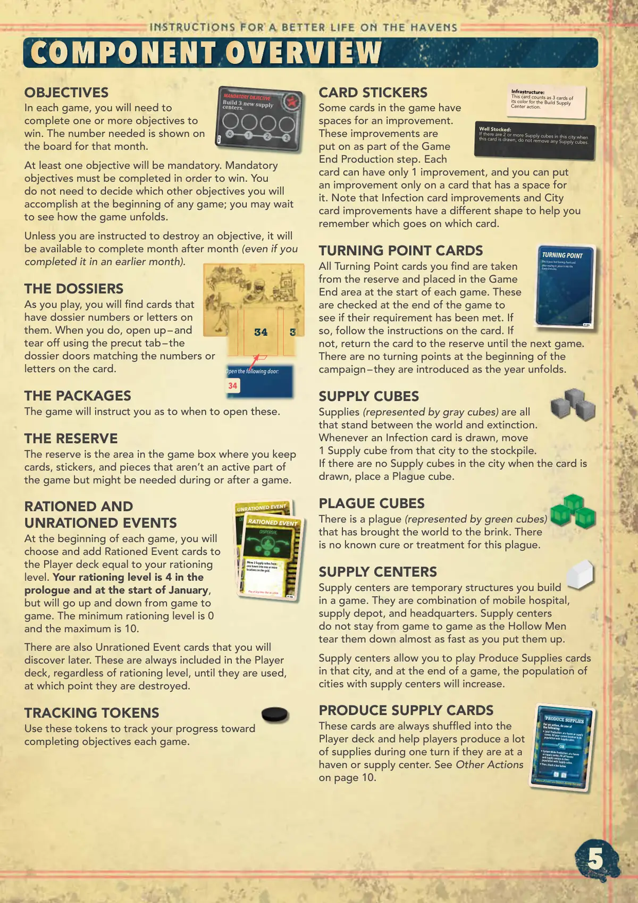
📝 第 5 页 AI 机翻对照（点击展开）
转折点
这是你的第一张转折点卡牌。
阅读后，将其放入
游戏结束区域。
01-06a
必须完成的目标
建造3个新的补给中心。
00-00b
01-04b
可在任何时候使用。不是行动。
无配给事件
从网格上的
1个地点移除所有瘟疫立方体。
使用后销毁此卡牌。
消毒工具包
P1-02b
可在任何时候使用。不是行动。
配给事件
将3个补给立方体从
一个港口移动到网格上的一个或多个地点。
分散
01-09b
生产补给
或者
作为一个行动，执行以下一项：
• 本地生产：在港口或补给中心，将你当前位置的补给立方体填充至其人口数量。
• 全系统生产：在港口或补给中心，将所有港口和补给中心的补给立方体填充至其人口数量。
• 然后，勾选下方一个方框。
当所有方框都被勾选后，销毁此卡牌。
打开以下门：
库存充足：
如果抽到此卡牌时该城市有2个或更多补给立方体，则不要移除任何补给立方体。
基础设施：
此卡牌在建造补给中心行动中计为其颜色的3张卡牌。
目标
在每局游戏中，你需要
完成一个或多个目标才能获胜。所需数量显示在
该月份的版图上。
至少有一个目标将是必须完成的。必须完成的目标
必须完成才能获胜。你不需要在
任何游戏开始时决定要完成哪些其他目标；你可以
等待观察游戏如何展开。
除非被指示销毁一个目标，否则它将
可供你逐月完成（即使你在较早月份已经完成它）。
档案
随着游戏进行，你会找到上面有档案编号或字母的卡牌。当你找到时，打开并
沿着预切标签撕下与卡牌上编号或字母相匹配的档案门。
包裹
游戏会指示你何时打开这些包裹。
储备区
储备区是游戏盒中存放那些不是游戏活跃部分但可能在游戏期间或之后需要的卡牌、贴纸和部件的区域。
配给事件和
无配给事件
在每局游戏开始时，你将选择并添加配给事件卡牌到玩家牌库中，数量等于你的配给等级。你的配给等级在序章和一月开始时是4，但在不同游戏中会上升和下降。最低配给等级是0，
最高是10。
还有无配给事件卡牌，你稍后会发现。这些卡牌始终包含在玩家牌库中，无论配给等级如何，直到它们被使用，
届时它们将被销毁。
追踪指示物
使用这些指示物来追踪你在每局游戏中完成目标的进展。
卡牌贴纸
游戏中的某些卡牌有用于升级的空间。
这些升级作为游戏结束生产步骤的一部分贴上。每张卡牌只能有1个升级，并且你只能将有升级空间的卡牌贴上升级。请注意，感染卡牌升级和城市卡牌升级有不同的形状，以帮助你记住哪张贴纸贴在哪张卡牌上。
转折点卡牌
你在游戏中找到的所有转折点卡牌都从储备库中取出，并在每局游戏开始时放置在游戏结束区域。这些卡牌在游戏结束时检查是否满足其要求。如果满足，则按照卡牌上的说明执行。如果不满足，则将卡牌返回储备库，直到下一局游戏。
战役开始时没有转折点卡牌——它们随着年份的推移而引入。
补给立方体
补给（用灰色立方体表示）是阻止世界灭绝的唯一屏障。每当抽取一张感染卡牌时，将该城市的1个补给立方体移动到储备库中。如果抽取卡牌时该城市没有补给立方体，则放置一个瘟疫立方体。
瘟疫立方体
有一种瘟疫（用绿色立方体表示）使世界濒临灭绝。这种瘟疫没有已知的治愈方法或治疗方法。
补给中心
补给中心是你在游戏中建造的临时结构。它们是移动医院、补给站和总部的结合体。补给中心不会从一局游戏保留到下一局游戏，因为空心人几乎在你建造的同时就将其拆毁。补给中心允许你在该城市使用生产补给卡牌，并且在游戏结束时，有补给中心的城市人口将会增加。
生产补给卡牌
这些卡牌总是被洗入玩家牌库，如果玩家在避难所或补给中心，可以帮助玩家在一回合内生产大量补给。请参见第10页的其他行动。
组件概览
组件概览
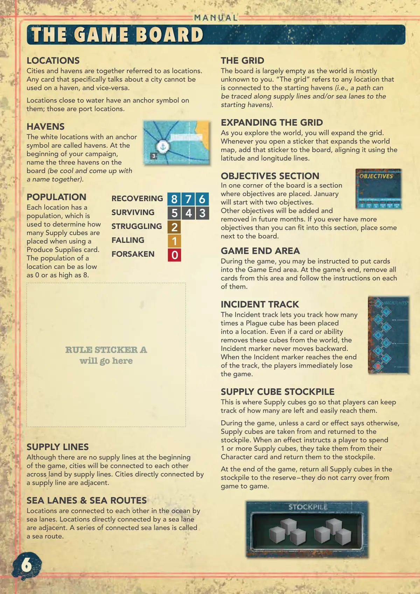
📝 第 6 页 AI 机翻对照（点击展开）
图例
L
地点
城市和避风港统称为地点。
任何专门提及城市的卡牌不能用于避风港，反之亦然。
靠近水的地点上有锚的符号；这些是港口地点。
避风港
带有锚符号的白色地点称为避风港。在战役开始时，为版图上的三个避风港命名（要酷，一起想个名字）。
人口
每个地点都有一个人口数，用于在使用"生产物资"卡牌时决定放置多少个物资立方体。
地点的人口数最低可为0，最高可为8。
规则贴纸 A
将放在这里
补给线
虽然游戏开始时没有补给线，但城市将通过陆地上的补给线相互连接。由补给线直接连接的城市是相邻的。
海道与海路
地点通过海道在海洋中相互连接。由海道直接连接的地点是相邻的。一系列相连的海道称为海路。
网格
由于世界对你们来说大部分是未知的，版图大部分是空的。"网格"指任何与起始避风港相连的地点（即可以沿着补给线和/或海道追踪到起始避风港的路径）。
扩展网格
随着你们探索世界，你们将扩展网格。每当打开一个扩展世界地图的贴纸时，将该贴纸添加到版图上，使用经纬线对齐。
目标区域
版图的一个角落是放置目标的区域。一月将开始有两个目标。
其他目标将在未来几个月添加和移除。如果你拥有的目标数量超过这个区域能容纳的数量，将一些目标放在版图旁边。
游戏结束区域
游戏期间，你可能会被指示将卡牌放入游戏结束区域。游戏结束时，从这个区域移除所有卡牌并遵循每张卡牌上的说明。
事件追踪
事件追踪器让你追踪瘟疫立方体被放入地点的次数。即使卡牌或能力从世界中移除了这些立方体，事件标记也永远不会向后移动。
当事件标记到达追踪器末端时，玩家立即输掉游戏。
物资立方体储备库
这是物资立方体的存放处，让玩家可以追踪剩余数量并轻松获取。游戏期间，除非卡牌或效果另有说明，否则物资立方体从储备库中取出和放回。当一个效果指示玩家花费1个或更多物资立方体时，他们从自己的储备库中取出它们。
角色卡并将其放回牌库。
游戏结束时，将牌库中的所有补给方块放回储备区——它们不会在游戏之间 carry over。
游戏版图
游戏版图
8 7 6
4 3
恢复中
幸存中
奋斗中
沉沦中
被遗弃
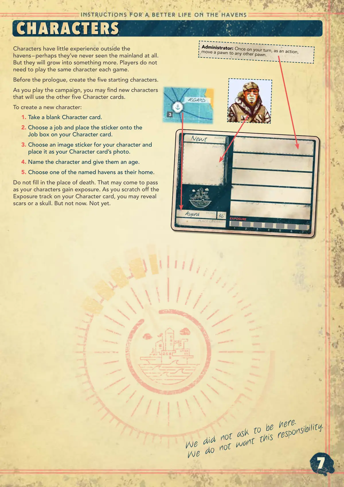
📝 第 7 页 AI 机翻对照（点击展开）
角色们在避难所之外几乎没有经验——也许他们根本从未见过大陆。
但他们将会成长得更加出色。玩家不需要每局游戏都扮演相同的角色。
在序幕之前，创建五个起始角色。
随着你进行战役，你可能会发现新角色，他们将使用另外五张角色卡。
要创建一个新角色：
- 拿取一张空白角色卡。
- 选择一个职业并将贴纸贴到你的角色卡的职业框中。
- 为你的角色选择一张图像贴纸并将其作为你的角色卡的照片。
- 为角色命名并给他们一个年龄。
- 选择一个命名好的避难所作为他们的家园。
不要填写死亡地点。随着你的角色获得暴露度，这可能会发生。当你刮擦角色卡上的暴露度轨道时，你可能会揭示出伤疤或骷髅。但现在还不是。还不是时候。
角色
角色
姓名
死亡地点
暴露度
家园
年龄
职业
照片
管理员：在你的回合中，作为一个行动，将一个棋子移动到任何其他棋子。
阿斯加德
纽特
阿斯加德
我们没有要求来到这里。
我们不想要这份责任。
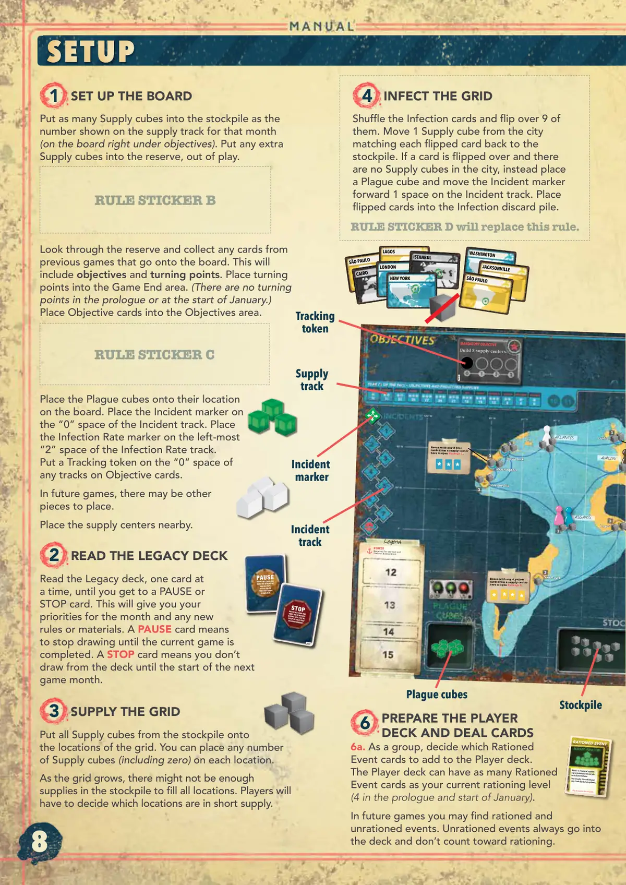
📝 第 8 页 AI 机翻对照（点击展开）
杰克逊维尔
华盛顿
纽约
圣保罗
拉各斯
伦敦
*
- *
- *
用供应中心的任意3张蓝色卡牌进行侦察，以开启包裹1。
港口
执行航行和包船行动所必需。
用供应中心的任意4张黄色卡牌进行侦察，以开启包裹5。
图例
亚特兰蒂斯
建造3个供应中心。
必要目标
00-02b
暂停
在你的第一场游戏中
于1月底的第2步期间
抽取这张卡并
阅读另一面。
01-07a
停止
在你的第一场游戏中
于2月设置的第2步期间
抽取这张卡并
阅读另一面。
00-00a
02-01a
圣保罗
拉各斯
华盛顿
开罗
伦敦
伊斯坦布尔
纽约
杰克逊维尔
圣保罗
准备玩家牌库并分发卡牌
6a. 作为一组，决定将哪些配给事件卡加入玩家牌库。
玩家牌库可以包含多达当前配给级别数量的配给事件卡（序章和1月初为4张）。
在未来的游戏中，你可能会发现配给和非配给事件。非配给事件总是加入牌库，不计入配给限制。
设置版图
根据供应轨道上显示的当月数量（在目标正下方的版图上），将相应数量的供应方块放入库存池。将多余的供应方块放入储备区，不参与游戏。
规则贴纸B
检查储备区，收集来自之前游戏中需要放在版图上的卡牌。这将包括目标和转折点。将转折点放入游戏结束区域。（序章或1月初没有转折点。）将目标卡牌放入目标区域。
规则贴纸C
将瘟疫方块放在版图上的相应位置。将事件标记放在事件轨道的"0"格上。将感染率标记放在感染率轨道最左侧的"2"格上。在目标卡牌的任何轨道上，将追踪指示物放在"0"格上。
在未来的游戏中，可能还有其他棋子需要放置。
将供应中心放在附近。
供应网格
将库存池中的所有供应方块放在网格的位置上。你可以在每个位置放置任意数量的供应方块（包括零）。随着网格扩大，库存池中的供应可能不足以填满所有位置。玩家必须决定哪些位置供应不足。
事件标记
供应轨道
追踪指示物
事件轨道
库存池
瘟疫方块
规则贴纸D将替换此规则。
阅读遗产牌库
一张一张地阅读遗产牌库，直到遇到暂停或停止卡。这将为你提供当月的优先事项和任何新
规则或材料。暂停卡意味着
停止抽牌，直到当前游戏
完成。停止卡意味着你不会
从牌库抽牌，直到下个游戏月开始。
感染网格
洗混感染牌并翻开其中9张。将每个对应翻开的牌的城市中的1个补给方块移回库存。如果一张牌被翻开且该城市中没有补给方块，则放置一个瘟疫方块并将事件标记在事件轨道上向前移动1格。将翻开的牌放入感染弃牌堆。可在任何时间使用。不是行动。
配给事件
将感染弃牌堆中特定城市的1或2张副本
移至游戏结束区域。
你可以在疫情的步骤2和步骤3之间
使用此卡牌。
韧性人口
ATLANTIS（亚特兰蒂斯）
AVALON（阿瓦隆）
ASGARD（阿斯加德）
设置
设置
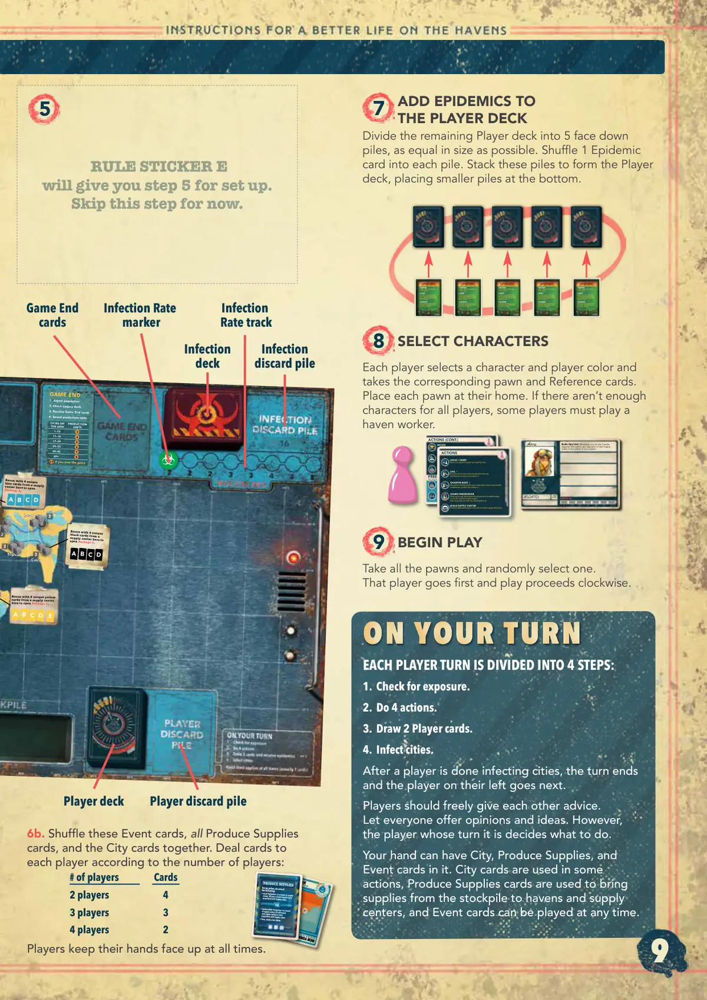
📝 第 9 页 AI 机翻对照（点击展开）
的黎波里
开罗
伊斯坦布尔
A
A
A
B
B
B
C
C
C
D
D
D
E
游戏结束
1. 调整人口
2. 检查传承牌库
3. 解决游戏结束卡牌
4. 消耗生产单位
网格上的
城市
生产
单位
1–10
11–16
17–24
25–33
34–42
43+
+1 如果你赢得了游戏
在这里的补给中心用4张独特的黑色卡牌进行侦察，以开启包2。
在这里的补给中心用4张独特的蓝色卡牌进行侦察，以开启包4。
在这里的补给中心用5张独特的黄色卡牌进行侦察，以开启包7。
1-增加
将感染率标记向前移动1格。
2-感染
从感染牌库底抽一张牌，并移除该城市上的所有补给方块（如果有）。弃掉那张牌。
3-加剧
洗混感染弃牌堆中的牌，并将它们放在感染牌库的顶部。
1-增加
将感染率标记向前移动1格。
2-感染
从感染牌库底抽一张牌，并移除该城市上的所有补给方块（如果有）。弃掉那张牌。
3-加剧
洗混感染弃牌堆中的牌，并将它们放在感染牌库的顶部。
1-增加
将感染率标记向前移动1格。
2-感染
从感染牌库底抽一张牌，并移除该城市上的所有补给方块（如果有）。弃掉那张牌。
3-加剧
洗混感染弃牌堆中的牌，并将它们放在感染牌库的顶部。
1-增加
将感染率标记向前移动1格。
2-感染
从感染牌库底抽一张牌，并移除该城市上的所有补给方块（如果有）。弃掉那张牌。
3-加剧
洗混感染弃牌堆中的牌，并将它们放在感染牌库的顶部。
1-增加
将感染率标记向前移动1格。
2-感染
从感染牌库底抽一张牌，并移除该城市上的所有补给方块（如果有）。弃掉那张牌。
3-加剧
洗混感染弃牌堆中的牌，并将它们放在感染牌库的顶部。
行动（续）
免费行动
侦察
在符合条件的地点弃牌以探索世界。该地点必须包含一个补给中心。
制造补给
从库存中取出1个补给方块，并将其放到你的角色卡上。
运送补给
将你角色卡上的任意数量的补给方块放入你当前位置。
拾取补给
从你当前位置取任意数量的补给方块，并将它们放到你的角色卡上。
转移补给
在你当前位置将补给方块给另一位玩家，或从该玩家处获取补给方块（需获得许可）。
在你的回合的"执行行动"步骤期间，执行任意数量的免费行动。
姓名
死亡地点
暴露
家乡
年龄
职业
照片
安娜
无线电操作员：每当执行转移物资免费行动时，你可以从任意位置的玩家那里给予或获取物资方块。
阿斯加德
驾车/渡轮
移动到由线路连接的相邻位置。
航行
弃掉一张卡牌，移动到卡牌上标注的城市，前提是你能追踪到一条通往该城市的水路。
租船
弃掉一张与你当前城市匹配的卡牌，移动到任意位置，前提是你能追踪到一条通往该城市的水路。
分享知识
选择：将一张与你所在城市匹配的卡牌给予另一名玩家，或从另一名玩家那里获取该卡牌。你们两人都必须在匹配该卡牌的城市中。
建立物资中心
弃掉5张与你城市颜色匹配的卡牌，在该城市建立一个物资中心。
行动
将疫情卡添加到
玩家牌库
将剩余的玩家牌库分成5面朝下的牌堆，尽可能大小相等。将1张疫情卡洗入每个牌堆。将这些牌堆堆叠形成玩家牌库，将较小的牌堆放在底部。
6b. 将这些事件卡、所有生产物资卡和城市卡洗在一起。根据玩家数量给每位玩家发牌：
玩家数量
卡牌
2位玩家
3位玩家
4位玩家
玩家必须始终保持手牌面朝上。
选择角色
每位玩家选择一个角色和玩家颜色，并拿取对应的棋子和参考卡。将每个棋子放在其家乡。如果没有足够的角色供所有玩家使用，则有些玩家必须扮演避难所工人。
开始游戏
拿取所有棋子并随机选择一个。该玩家先手，游戏按顺时针方向进行。
在你的回合
在你的回合
每位玩家回合分为4个步骤：
- 检查暴露。
- 执行4个行动。
- 摸2张玩家卡牌。
- 感染城市。
当玩家完成感染城市后，回合结束，其左侧的玩家进行下一轮。
玩家应自由地互相提供建议。让每个人提供意见和想法。然而，轮到行动的玩家决定做什么。
你的手牌中可以有城市卡、生产物资卡和事件卡。城市卡用于某些行动，生产物资卡用于将物资从库存运送到避难所和物资中心，事件卡可以在任何时候使用。
感染牌库
感染弃牌堆
感染速率轨道
感染速率标记
游戏结束卡
规则贴纸E
将为您提供设置的步骤5。
现在跳过此步骤。
玩家牌库
玩家弃牌堆
纽约
40°45'32''N 73°59'4''W
纽约
40°45'32''N 73°59'4''W
生产物资
或
作为一个行动，执行以下选项之一
• 本地生产：在避难所或供应中心，用供应方块将你当前位置的人口填满。
• 系统范围生产：在避难所或供应中心，用供应方块将所有避难所和供应中心的人口填满。
• 然后，勾选下方一个方框。
当所有方框都被勾选时，销毁此卡牌。
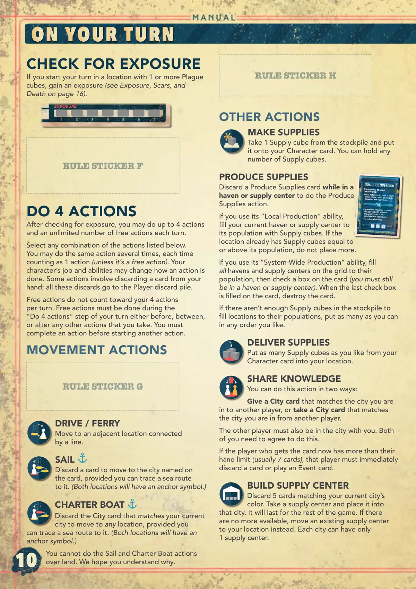
📝 第 10 页 AI 机翻对照（点击展开）
在你的回合
在你的回合
生产物资
或者
执行一个行动，执行以下之一：
• 本地生产：在港口或物资中心，用物资方块填满你当前位置的人口数。
• 全系统生产：在港口或物资中心，用物资方块填满所有港口和物资中心的人口数。
• 然后，检查卡片下方的一个方框。
当所有方框都被检查后，销毁此卡片。
检查暴露
如果你的回合开始时所在位置有1个或更多瘟疫方块，获得一个暴露（参见第16页的暴露、伤疤与死亡）。
ATH
暴露
规则贴纸 F
执行4个行动
检查暴露后，你每回合可以执行最多4个行动和无限数量的免费行动。
选择下面列出的任何行动组合。
你可以多次执行相同的行动，每次计为1个行动（除非是免费行动）。你角色的职业和能力可能会改变行动的执行方式。一些行动需要从手牌中弃掉一张牌；所有这些弃牌都进入玩家弃牌堆。
免费行动不计入你每回合的4个行动中。免费行动必须在你回合的"执行4个行动"步骤中执行，可以在你执行的任何其他行动之前、之间或之后进行。你必须完成一个行动后才能开始另一个行动。
移动行动
规则贴纸 G
驾车/摆渡
移动到由线路连接的相邻位置。
航行
弃掉一张牌，移动到牌上命名的城市，前提是你能找到一条通往它的海上路线。（两个位置都必须有锚符号。）
租船
弃掉与你当前城市匹配的城市牌，移动到任何位置，前提是你能找到一条通往它的海上路线。（两个位置都必须有锚符号。）
你不能通过陆地执行航行和租船行动。我们希望你理解为什么。
规则贴纸 H
其他行动
制造物资
从物资堆中取出1个物资方块，放到你的角色牌上。你可以持有任意数量的物资方块。
生产物资
在港口或物资中心时，弃掉一张生产物资牌来执行生产物资行动。
如果你使用其"本地生产"能力，用物资方块填满你当前的港口或物资中心的人口数。如果该位置已经有等于或超过其人口数的物资方块，则不要放置更多。
如果你使用其"全系统生产"能力，用物资方块填满版图上所有港口和物资中心的人口数，然后检查卡片上的一个方框（你必须仍然在港口或物资中心）。当卡片上的最后一个检查方框被填满时，销毁该卡片。
如果物资堆中没有足够的物资方块来
用尽可能多的指示物填满地点，按你喜欢的任意顺序进行。
运送物资
你可以从你的角色卡上任意数量的物资指示物放入你的地点。
分享知识
你可以通过两种方式执行此行动：
将一张与你所在城市匹配的城市卡交给另一名玩家，或者从另一名玩家那里获取一张与你所在城市匹配的城市卡。
另一名玩家也必须与你同处该城市。双方都需要同意执行此行动。
如果获得卡牌的玩家现在手牌数量超过其手牌上限（通常是7张），该玩家必须立即弃掉一张卡牌或打出一张事件卡。
建造物资中心
弃掉5张与你当前城市颜色匹配的卡牌。获取一个物资中心并将其放置在该城市。它将持续到游戏结束。如果没有可用的物资中心，则将现有的物资中心移动到你的位置。每个城市只能有1个物资中心。
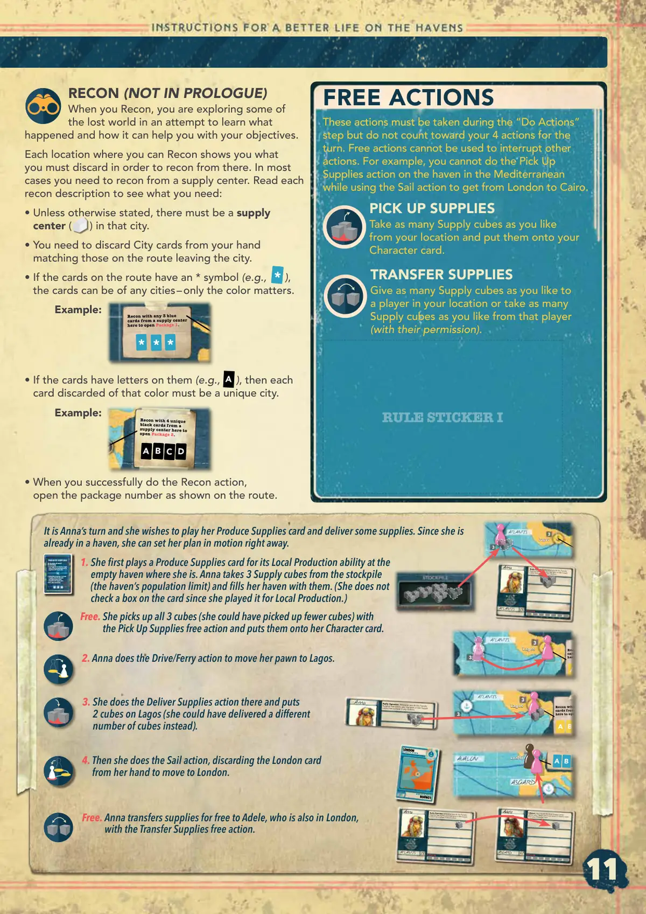
📝 第 11 页 AI 机翻对照（点击展开）
姓名
死亡地点
曝光度
家乡
年龄
职业
照片
安娜
无线电操作员：每当您执行转移补给免费行动时，您可以从任何位置的玩家那里给予或获取补给方块。
亚特兰蒂斯
姓名
死亡地点
曝光度
家乡
年龄
职业
照片
阿黛尔
劳工：如果您从您的角色卡上花费2个补给方块，您可以少用1张卡牌来执行建造补给中心行动。
阿斯加德
姓名
死亡地点
曝光度
家乡
年龄
职业
照片
安娜
无线电操作员：每当您执行转移补给免费行动时，您可以从任何位置的玩家那里给予或获取补给方块。
生产补给
或
作为一个行动，执行以下操作之一：
• 本地生产：在避难所或补给中心，将您当前位置的补给方块填充至其人口数量。
• 全系统生产：在避难所或补给中心，将所有避难所和补给中心的补给方块填充至其人口数量。
• 然后，勾选下方的一个框。
当所有框都被勾选时，销毁此卡牌。
拉各斯
A B
从此处使用卡牌进行侦察
姓名
职业
照片
安娜
无线电操作员：每当您执行转移补给免费行动时，您可以从任何位置的玩家那里给予或获取补给方块。
拉各斯
亚特兰蒂斯
拉各斯
A
在此处使用卡
牌进行侦察
伦敦
51°30'27''N 0°7'40''W
伦敦
51°30'27''N 0°7'40''W
伦敦
是
A B C
包裹4。
阿斯加德
阿瓦隆
免费行动
这些行动必须在"执行行动"步骤期间执行，但不计入您本回合的4个行动。免费行动不能用于打断其他行动。例如，您不能在使用从伦敦到开罗的航行行动时，在地中海的避难所执行拾取补给行动。
拾取补给
从您所在位置获取任意数量的补给方块，并将它们放到您的角色卡上。
转移补给
将任意数量的补给方块给予您所在位置的玩家，或从该玩家处获取任意数量的补给方块（需获得其许可）。
规则贴纸 I
侦察（序章中不适用）
当您进行侦察时，您正在探索失落世界的一部分，试图了解发生了什么以及它如何帮助您实现目标。每个您可以进行侦察的位置都会显示您必须丢弃什么才能从那里进行侦察。在大多数情况下，您需要从补给中心进行侦察。阅读每个侦察描述以了解您需要什么：
• 除非另有说明，该城市必须有一个补给中心（ ）。
• 您需要从您的手牌中丢弃与离开该城市的路线上的城市相匹配的城市卡牌。
• 如果路线上的卡牌有符号（例如，），这些卡牌可以是任何城市的卡牌——只有颜色重要。
使用此处供应中心的任意3张蓝色卡牌进行侦察，以开启包裹1。
• 如果卡牌上有字母（例如A），那么弃置的每种颜色的每张卡牌必须是独特的城市。
A B C D
使用此处供应中心的4张独特黑色卡牌进行侦察，以开启包裹2。
• 当你成功执行侦察行动时，开启路线上所示的编号包裹。
现在是安娜的回合，她想要打出她的生产补给卡牌并运送一些补给。由于她已经在避难港，她可以立即开始执行计划。
- 她首先在她所在的空避难港打出一张生产补给卡牌，用于其本地生产能力。安娜从储备堆中取出3个补给方块（避难港的人口限制）并用它们填满她的避难港。（由于她是为本地生产能力而打出这张卡牌，所以她不在卡牌上勾选任何框。）
免费。她通过拾取补给免费行动拾起所有3个方块（她也可以拾起更少数量的方块），并将它们放到她的角色卡牌上。
免费。安娜通过转移补给免费行动免费将补给转移给同样在伦敦的阿黛尔。
ATLANTIS
ATLANTIS
ATLANTIS
示例：
示例：
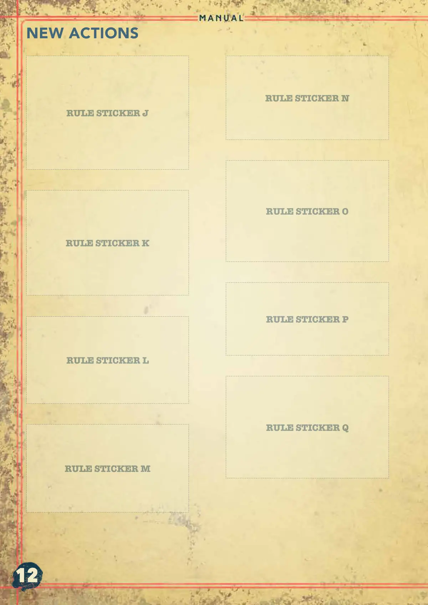
📝 第 12 页 AI 机翻对照（点击展开）
新行动
规则贴纸 J
规则贴纸 K
规则贴纸 L
规则贴纸 M
规则贴纸 N
规则贴纸 O
规则贴纸 P
规则贴纸 Q
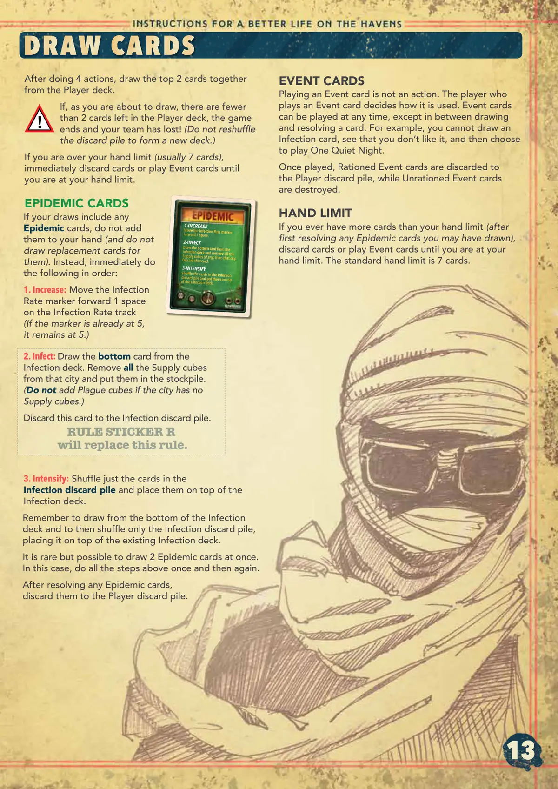
📝 第 13 页 AI 机翻对照（点击展开）
1-增加
将感染率标记向前移动1格。
2-感染
从感染牌库底部抽一张牌，并从该城市移除所有供应物资（如果有）。弃掉那张牌。
3-加剧
洗混感染弃牌堆中的牌，并将它们放在感染牌库顶部。
抽牌
抽牌
规则贴纸 R
将替换此规则。
完成4个行动后，从玩家牌库顶部一起抽2张牌。
当你即将抽牌时，如果玩家牌库中剩余的牌少于2张，游戏结束，你的团队失败！（不要洗混弃牌堆来形成新牌库。）
如果你的手牌数量超过了手牌上限（通常是7张），立即弃牌或打出事件牌，直到你的手牌数量达到手牌上限。
瘟疫牌
如果你的抽牌中包含任何瘟疫牌，不要将它们加入你的手牌（也不要为它们抽替代牌）。相反，立即按顺序执行以下操作：
1. 增加：将感染率标记在感染率轨道上向前移动1格
（如果标记已经在5，则保持在5。）
2. 感染：从感染牌库底部抽一张牌。从该城市移除所有供应物资，并将它们放回物资堆。
（如果该城市没有供应物资，不要添加瘟疫物资。）
将这张牌弃到感染弃牌堆。
- 加剧：只洗混感染弃牌堆中的牌，并将它们放在感染牌库顶部。
记住要从感染牌库底部抽牌，然后只洗混感染弃牌堆，将其放在现有感染牌库顶部。
虽然罕见但有可能一次抽到2张瘟疫牌。在这种情况下，执行上述所有步骤一次，然后再执行一次。
解决任何瘟疫牌后，将它们弃到玩家弃牌堆。
事件牌
打出事件牌不是一种行动。打出事件牌的玩家决定如何使用它。事件牌可以在任何时间打出，除了在抽牌和解决一张牌之间。例如，你不能抽一张感染牌，看到你不喜欢的牌，然后选择打出"一个安静的夜晚"。
一旦打出，配给事件牌被弃到玩家弃牌堆，而非配给事件牌被销毁。
手牌上限
如果你拥有的牌数超过了手牌上限（在首先解决你可能抽到的任何瘟疫牌之后），弃牌或打出事件牌，直到你的手牌数量达到手牌上限。标准手牌上限是7张。
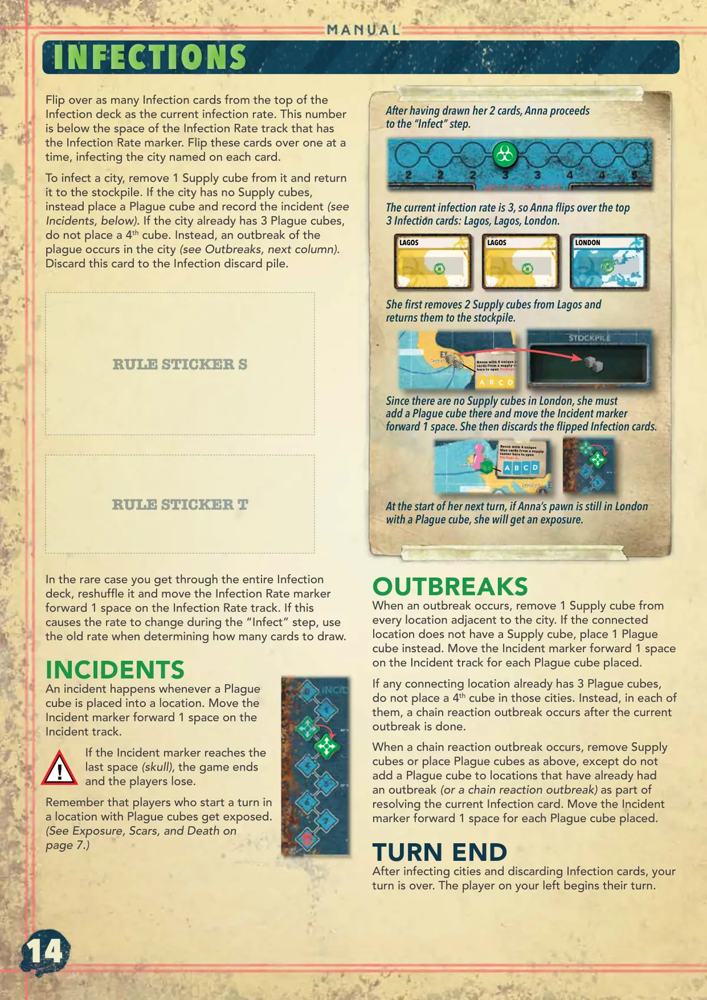
📝 第 14 页 AI 机翻对照（点击展开）
图例
拉各斯
A B C D
在此处用5张独特的黄色卡牌进行侦察，以开启包裹7。
伦敦
伊斯坦布尔
A B C D
在此处用4张独特的蓝色卡牌进行侦察，以开启包裹4。
爆发
当爆发发生时，从该城市每个相邻位置移除1个补给物资方块。如果相连位置没有补给物资方块，则放置1个瘟疫方块。为每个放置的瘟疫方块，将事件标记在事件轨道上向前移动1格。
如果任何相连位置已经有3个瘟疫方块，不要在这些城市放置第4个方块。相反，在每一个这样的城市中，在当前爆发完成后，会发生连锁反应爆发。
当发生连锁反应爆发时，如上所述移除补给物资方块或放置瘟疫方块，但不要向已经作为解决当前感染卡的一部分而爆发过（或发生过连锁反应爆发）的位置添加瘟疫方块。为每个放置的瘟疫方块，将事件标记向前移动1格。
回合结束
在感染城市并弃置感染卡后，你的回合结束。你左边的玩家开始他们的回合。根据当前的感染率，从感染牌库顶部翻出相应数量的感染卡。这个数字位于感染率轨道上感染率标记所在空间下方。一张一张地翻出这些卡，感染每张卡上命名的城市。
要感染一个城市，从中移除1个补给物资方块并将其放回库存。如果该城市没有补给物资方块，则放置1个瘟疫方块并记录事件（见下文事件）。如果该城市已经有3个瘟疫方块，不要放置第4个方块。相反，瘟疫在该城市爆发（见下一列爆发）。将此卡弃置到感染弃牌堆。
规则贴纸 S
规则贴纸 T
在罕见情况下，你用完了整个感染牌库，将其重新洗牌并将感染率标记在感染率轨道上向前移动1格。如果这导致在"感染"步骤期间速率发生变化，在确定要抽取多少张卡时使用旧速率。
事件
每当瘟疫方块被放入一个位置时，就会发生事件。将事件标记在事件轨道上向前移动1格。
如果事件标记到达最后一个空间（骷髅头），游戏结束，玩家失败。
记住，在瘟疫方块所在位置开始回合的玩家会暴露。（见第7页的暴露、伤疤和死亡。）
在抽取了她的2张卡后，安娜进入"感染"步骤。
当前感染率为3，因此安娜翻开了顶部的3张感染卡：拉各斯、拉各斯、伦敦。
她首先从拉各斯移除2个补给物资方块并将它们放回库存。
由于伦敦没有供应方块，她必须在伦敦添加一个瘟疫方块，并将事件指示物向前移动1格。然后她弃置翻开的感染卡牌。
在她的下一个回合开始时，如果安娜的棋子仍然在伦敦且带有瘟疫方块，她将获得一次暴露。
拉各斯
拉各斯
伦敦
感染
感染
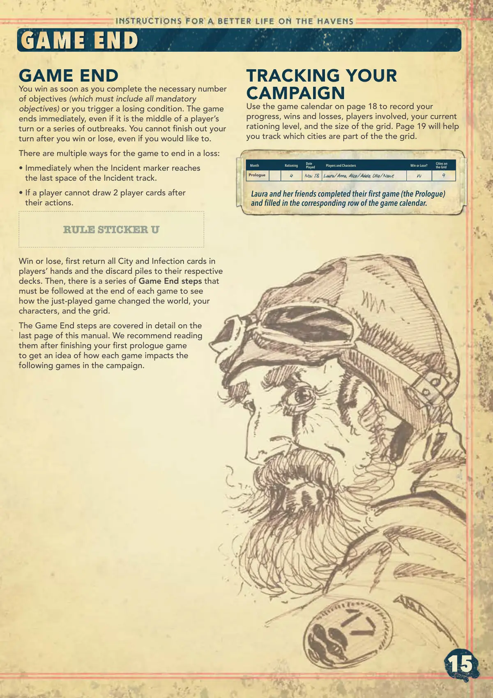
📝 第 15 页 AI 机翻对照（点击展开）
月份
配给
日期
游戏时间
玩家与角色
输赢？
网格上的城市
11月18日
劳拉/安娜，爱丽丝/阿黛尔，奥利/纽特
胜
序幕
游戏结束
一旦你完成了必要数量的目标（必须包括所有强制目标）或触发了失败条件，你就获胜。游戏立即结束，即使是在玩家回合中途或一系列爆发期间。即使你愿意，也不能在你获胜或失败后完成你的回合。
游戏以失败方式结束有多种情况：
• 当事件标记到达事件轨道的最后一个空间时立即失败。
• 如果玩家在行动后无法抽取2张玩家卡牌。
规则贴纸 U
无论输赢，首先将玩家手中的城市卡和感染卡以及弃牌堆中的所有卡牌归还到各自的牌库中。然后，有一系列游戏结束步骤，必须在每局游戏结束时遵循，以了解刚刚进行的游戏如何改变了世界、你的角色和网格。
游戏结束步骤在本手册最后一页有详细说明。我们建议在完成你的第一个序幕游戏后阅读它们，以了解每局游戏如何影响战役中的后续游戏。
游戏结束
游戏结束
追踪你的
战役
使用第18页的游戏日历来记录你的进度、输赢情况、参与的玩家、你当前的配给水平和网格大小。第19页将帮助你追踪哪些城市是网格的一部分。
劳拉和她的朋友们完成了他们的第一场游戏（序幕），并填写了游戏日历中相应的行。
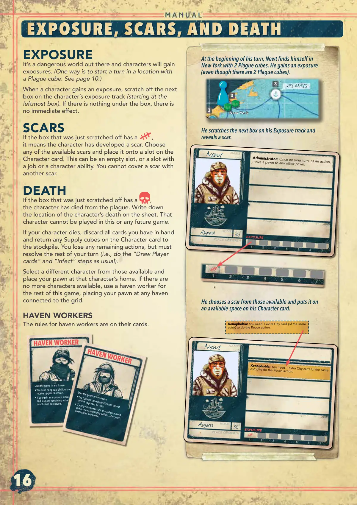
📝 第 16 页 AI 机翻对照（点击展开）
港口工人
在任何港口开始游戏。
• 你没有特殊能力，不能获得升级或伤疤。
• 如果你获得暴露，弃掉你的手牌并失去任何剩余的行动。在你的下一个回合开始于任何港口。
港口工人
在任何港口开始游戏。
• 你没有特殊能力，不能获得升级或伤疤。
• 如果你获得暴露，弃掉你的手牌并失去任何剩余的行动。在你的下一个回合开始于任何港口。
纽约
亚特兰蒂斯
姓名
死亡地点
暴露
家乡
年龄
职业
照片
管理员：在你的回合中，作为一次行动，将一个棋子移动到任何其他棋子处。
阿斯加德
纽特
姓名
死亡地点
暴露
家乡
年龄
职业
照片
阿斯加德
纽特
排外症：你需要额外1张同颜色的城市卡牌来进行侦察行动。
排外症：你需要额外1张同颜色的城市卡牌来进行侦察行动。
暴露
外面的世界很危险，角色会获得暴露。（一种方式是在有瘟疫骰子的地点开始回合。参见第10页。）
当角色获得暴露时，刮掉角色暴露轨道上的下一个方框（从最左边的方框开始）。如果方框下面没有任何内容，则没有立即效果。
伤疤
如果刚刚刮掉的方框有一个
，这意味着角色已经形成了伤疤。从可用的伤疤中选择一个，并将其放置在角色卡上的一个槽位中。这可以是空槽位，或有职业或角色能力的槽位。你不能用另一个伤疤覆盖伤疤。
死亡
如果刚刚刮掉的方框有一个
，角色已经死于瘟疫。在表格上写下角色死亡的位置。该角色不能在本场或任何未来的游戏中使用。
如果你的角色死亡，弃掉你手中的所有卡牌，并将角色卡上的所有供应骰子归还到库存堆。你失去任何剩余的行动，但必须完成你回合的其余部分（即，照常执行"摸玩家卡牌"和"感染"步骤）。
从可用的角色中选择一个不同的角色，并将你的棋子放置在该角色的家乡。如果没有更多可用角色，则在本场游戏的剩余时间使用港口工人，将你的棋子放置在任何连接到网格的港口。
港口工人
港口工人的规则在他们自己的卡牌上。
暴露、伤疤和死亡
暴露、伤疤和死亡
在纽特回合开始时，他发现自己位于纽约，有2个瘟疫骰子。他获得了一次暴露（尽管有2个瘟疫骰子）。
他刮掉了自己暴露轨道上的下一个方框，揭示了一个伤疤。
他从可用的伤疤中选择一个，并将其放置在自己的角色卡上的可用空间中。
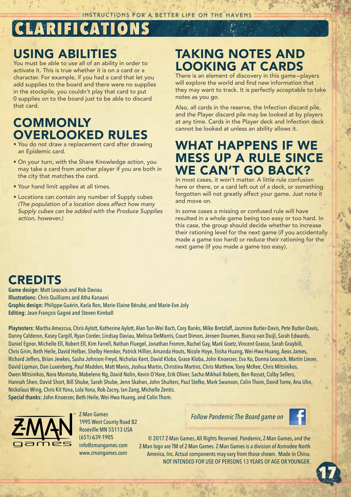
📝 第 17 页 AI 机翻对照（点击展开）
制作人员
游戏设计：Matt Leacock 和 Rob Daviau
插画：Chris Quilliams 和 Atha Kanaani
平面设计：Philippe Guérin, Karla Ron, Marie-Elaine Bérubé, 和 Marie-Eve Joly
编辑：Jean-François Gagné 和 Steven Kimball
测试玩家：Martha Amezcua, Chris Aylott, Katherine Aylott, Alan Tun-Wei Bach, Cory Banks, Mike Bretzlaff, Jasmine Butler-Davis, Pete Butler-Davis,
Danny Calderon, Kasey Cargill, Ryan Corder, Lindsay Daviau, Melissa DeMorris, Court Dimon, Jeroen Doumen, Bianca van Duijl, Sarah Edwards,
Daniel Egnor, Michelle Ell, Robert Ell, Kim Farrell, Nathan Fluegel, Jonathan Fromm, Rachel Gay, Mark Goetz, Vincent Grasso, Sarah Graybill,
Chris Grim, Beth Heile, David Helber, Shelby Hemker, Patrick Hillier, Amanda Houts, Nicole Hoye, Trisha Huang, Wei-Hwa Huang, Aeos James,
Richard Jeffers, Brian Jewkes, Sasha Johnson-Freyd, Nicholas Kent, David Kloba, Grace Kloba, John Knoerzer, Eva Ko, Donna Leacock, Martin Lieser,
David Lipman, Dan Luxenberg, Paul Madden, Matt Manis, Joshua Martin, Christina Martins, Chris Matthew, Tony McRee, Chris Mitsinikos,
Owen Mitsinikos, Nora Montaño, Mabelene Ng, David Nolin, Kevin O'Hare, Erik Oliver, Sacha-Mikhail Roberts, Ben Rosset, Colby Sellers,
Hannah Shen, David Short, Bill Shube, Sarah Shube, Jenn Skahan, John Shulters, Paul Stefko, Mark Swanson, Colin Thom, David Tome, Ana Ulin,
Nickolaus Wing, Chris Kit Yona, Lola Yona, Rob Zacny, Ian Zang, Michelle Zentis.
特别感谢：John Knoerzer, Beth Heile, Wei-Hwa Huang, 和 Colin Thom.
Z-Man Games
1995 West County Road B2
Roseville MN 55113 USA
(651)-639-1905
info@zmangames.com
www.zmangames.com
关注 Pandemic The Board game
使用能力
你必须能够完整使用一项能力才能激活它。无论是在卡牌上还是角色上都是如此。例如，如果你有一张可以往版图上添加补给的卡牌，而补给堆中没有补给，你不能为了弃掉这张牌而打出它来在版图上放置 0 个补给。
常被
忽略的规则
• 抽到疫情卡后，你不抽一张替换卡。
• 在你的回合中，通过分享知识行动，如果你和另一名玩家都在与卡牌相匹配的城市，你可以从该玩家那里拿一张牌。
• 你的手牌限制始终适用。
• 位置可以包含任意数量的补给立方体（然而，位置的人口数量确实会影响通过生产补给行动可以添加多少个补给立方体。）
记笔记和
查看卡牌
这款游戏有一个探索元素——玩家将探索世界并发现他们可能想要追踪的新信息。随着游戏进行做笔记是完全被允许的。
此外，牌库中的所有卡牌、感染弃牌堆和玩家弃牌堆中的卡牌，玩家随时可以查看。玩家牌库和感染牌库中的卡牌不能被查看，除非有特殊能力允许这样做。
如果我们搞错了一条规则
因为我们无法回退怎么办？
在大多数情况下，这并不重要。一些规则上的混淆，或者一张卡牌被遗漏在牌库外，或者某些事情被忘记，不会对你的游戏产生重大影响。只需记录下来并继续游戏。
在某些情况下，缺失或混淆的规则会导致整个游戏变得过于简单或过于困难。在这种情况下，团队应该决定是否要在下一场游戏中增加他们的配给水平（如果你不小心让游戏变得太难了），或者在下一场游戏中减少他们的配给（如果你让游戏变得太简单了）。
澄清
澄清
© 2017 Z-Man Games, 保留所有权利。Pandemic、Z-Man Games 和 Z-Man 标志是 Z-Man Games 的商标。Z-Man Games 是 Asmodee North America, Inc. 的一个部门。实际组件可能与所示的不同。中国制造。
不适用于 13 岁或以下人士使用。
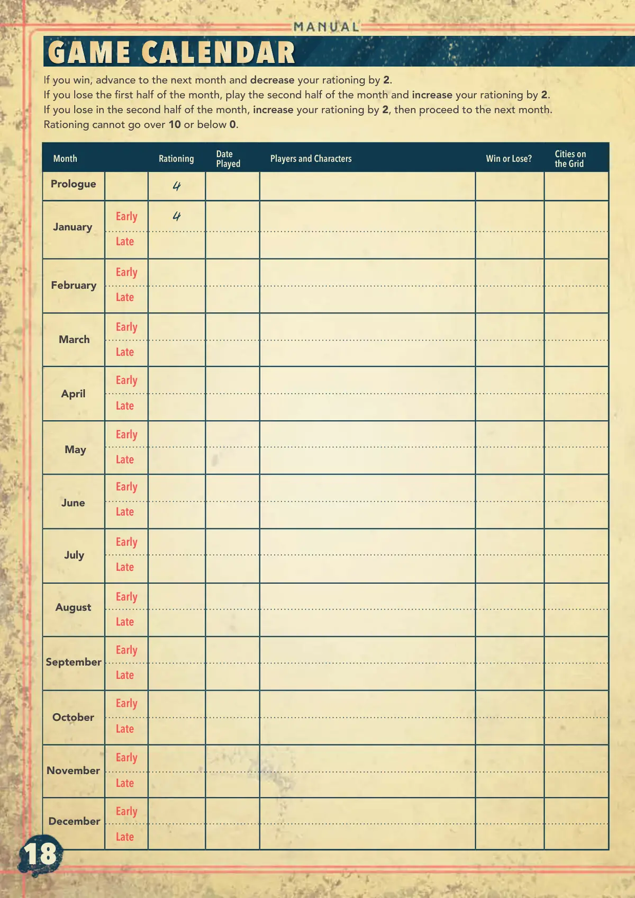
📝 第 18 页 AI 机翻对照（点击展开）
月份
配给
日期
游戏日期
玩家与角色
输赢？
网格上的城市
序章
如果你赢了，进入下一个月并将你的配给减少2。
如果你在月上旬输了，则玩月下旬并将你的配给增加2。
如果你在月下旬输了，将你的配给增加2，然后进入下一个月。
配给不能超过10或低于0。
一月
二月
三月
四月
五月
六月
七月
八月
九月
十月
十一月
十二月
上旬
下旬
上旬
下旬
上旬
下旬
上旬
下旬
上旬
下旬
上旬
下旬
上旬
下旬
上旬
下旬
上旬
下旬
上旬
下旬
上旬
下旬
游戏日历
游戏日历
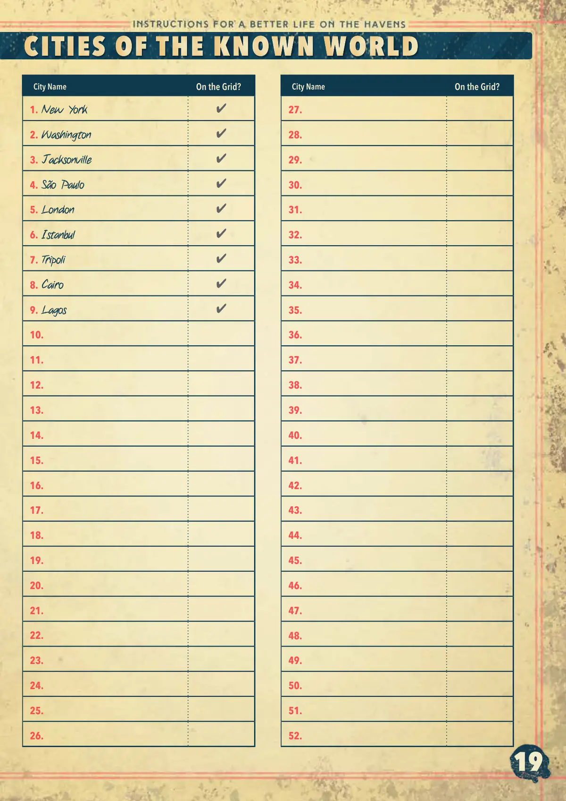
📝 第 19 页 AI 机翻对照（点击展开）
城市名称
在网格上？
1. 纽约 (New York)
2. 华盛顿 (Washington)
3. 杰克逊维尔 (Jacksonville)
- 圣保罗 (São Paulo)
5. 伦敦 (London)
6. 伊斯坦布尔 (Istanbul)
7. 的黎波里 (Tripoli)
8. 开罗 (Cairo)
9. 拉各斯 (Lagos)
10.
11.
12.
13.
14.
15.
16.
17.
18.
19.
20.
21.
22.
23.
24.
25.
26.
城市名称
在网格上？
27.
28.
29.
30.
31.
32.
33.
34.
35.
36.
37.
38.
39.
40.
41.
42.
43.
44.
45.
46.
47.
48.
49.
50.
51.
52.
已知世界城市
已知世界城市
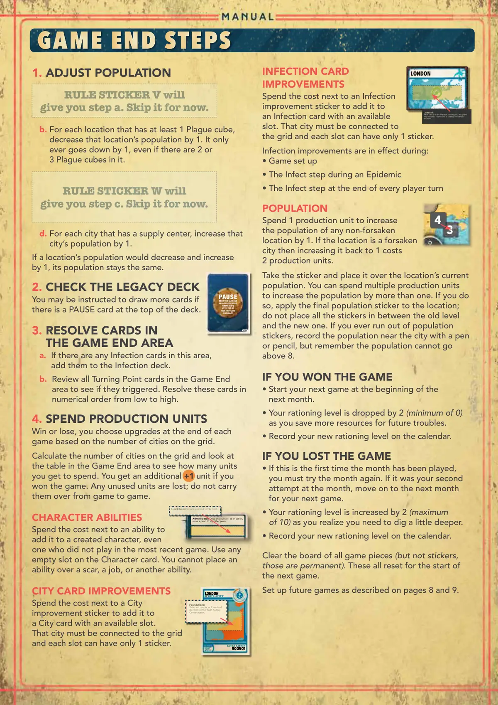
📝 第 20 页 AI 机翻对照（点击展开）
伦敦
51°30’27’’N 0°7’40’’W
伦敦
51°30’27’’N 0°7’40’’W
基础：
这张卡牌在执行建造供应中心行动时，算作其颜色的2张卡牌。
暂停
在第一步期间抽起这张卡牌并
在你一月份的第一局游戏结束时
阅读另一面。
01-07a
伦敦
封锁：
如果这张卡牌在感染弃牌堆中，任何玩家可以在任何时候弃掉一张玩家卡牌来销毁这张卡牌。
姓名
职业
照片
管理员：在你的回合期间，作为一次行动，将一个棋子移动到任何其他棋子处。
记录员：将你的手牌上限增加1张卡牌。
感染卡牌
改进
花费感染改进贴纸旁边的费用，将其添加到有空位的感染卡牌上。该城市必须已连接到网格，且每个槽位只能有1张贴纸。
感染改进在以下期间生效：
• 游戏设置
• 瘟疫期间的感染步骤
• 每个玩家回合结束时的感染步骤
人口
花费1个生产单位来增加任何被遗弃地点的人口1点。如果该地点是被遗弃的城市，则将其恢复到1点需要花费2个生产单位。
取走贴纸并将其覆盖在地点的当前人口上。你可以花费多个生产单位来增加人口超过1点。如果你这样做，将最终的人口贴纸应用到该地点；不要将所有中间的贴纸放在旧级别和新级别之间。如果你用完了人口贴纸，用钢笔或铅笔在城市附近记录人口，但记住人口不能超过8点。
如果你赢了游戏
• 从下个月初开始你的下一局游戏。
• 你的配给等级降低2点（最低为0），因为你为未来的麻烦储备了更多资源。
• 在日历上记录你的新配给等级。
如果你输了游戏
• 如果这是本月第一次被游玩，你必须再次尝试本月。如果你是本月第二次尝试，则进行下一月进行你的下一局游戏。
• 你的配给等级增加2点（最高为10），因为你意识到你需要挖掘得更深一些。
• 在日历上记录你的新配给等级。
清除版图上的所有游戏棋子（但贴纸不是，那些是永久的）。这些都在下一局游戏开始时重置。
按照第8页和第9页所述设置未来的游戏。
游戏结束步骤
游戏结束步骤
1. 调整人口
规则贴纸V将给你步骤a。现在跳过它。
b. 对于每个至少有1个瘟疫方块的位置，将该位置的人口减少1点。即使其中有2个或3个瘟疫方块，人口也只会减少1点。
规则贴纸W将给你步骤c。现在跳过它。
d. 对于每个拥有供应中心的城市，将该城市的人口增加1。
如果一个地点的人口将减少和增加1，则其人口保持不变。
2. 检查传承牌库
如果牌库顶部有一张暂停牌，你可能会被指示抽取更多牌。
3. 解决游戏结束区域的卡牌
a. 如果此区域有任何感染卡，将它们添加到感染牌库中。
b. 检查游戏结束区域中的所有转折点卡牌，查看它们是否触发。按从低到高的数字顺序解决这些卡牌。
4. 消耗生产单位
无论输赢，你根据版图上的城市数量在每局游戏结束时选择升级。计算版图上的城市数量，查看游戏结束区域的表格，了解你可以消耗多少单位。如果你赢得了游戏，你将额外获得+1个单位。任何未使用的单位都会丢失；不要将它们从一局游戏带到另一局游戏。
角色能力
花费能力旁边的费用，将其添加到创建的角色身上，即使是最近一局游戏中没有出场的角色。使用角色卡上的任何空槽位。你不能将能力放置在伤疤、职业或其他能力之上。
城市卡牌改进
花费城市改进贴纸旁边的费用，将其添加到有空槽位的城市卡牌上。该城市必须连接到版图，并且每个槽位只能有1张贴纸。